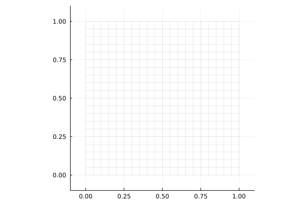
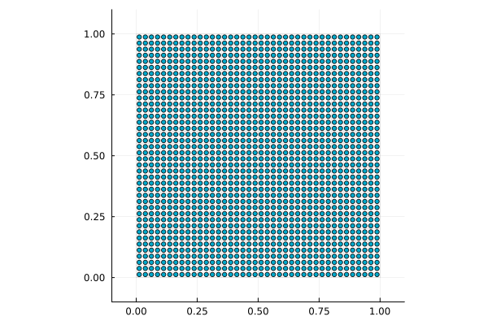
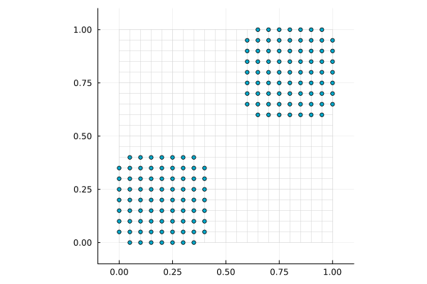
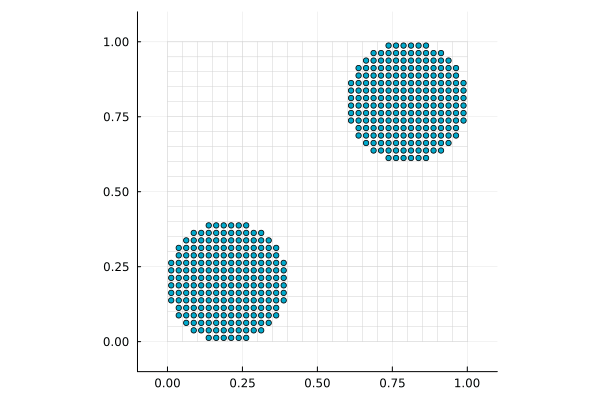

Getting started
This tutorial builds a two-disk MPM simulation step by step. A runnable script is shown at the end.
The simulation in this tutorial uses four core objects:
- A
meshstores the background node positions. - A
gridstores user-defined fields on that mesh, such as mass, momentum, force, and velocity. particlesstore material state, such as position, velocity, volume, deformation gradient, and stress.weightsstore the basis function values connecting each particle to nearby grid nodes.
At each time step, we update the weights, use @P2G for particle-to-grid transfer and grid-node calculations, and then use @G2P for grid-to-particle transfer and particle calculations.
Simulation loop at a glance
The full simulation loop has this shape:
for each time step
update basis function values
@P2G ... # particles -> grid, then grid nodes
@G2P ... # grid -> particles, then particles
endGrid and particle generation
1. Simulation constants
Start by importing Tesserae and defining the constants used later:
using Tesserae
Δt = 0.001 # Time step size
E = 1000.0 # Young's modulus
ν = 0.3 # Poisson's ratio
λ = (E*ν) / ((1+ν)*(1-2ν)) # Lame's first parameter
μ = E / 2(1 + ν) # Shear modulus
ρ⁰ = 1000.0 # Initial density2. Grid and particle properties
Before generating the grid and particles, define the fields stored on each grid node and particle:
struct GridProp
x :: Vec{2, Float64} # Position
m :: Float64 # Mass
mv :: Vec{2, Float64} # Momentum
f :: Vec{2, Float64} # Force
v :: Vec{2, Float64} # Velocity
vⁿ :: Vec{2, Float64} # Velocity at t = tⁿ
end
struct ParticleProp
x :: Vec{2, Float64} # Position
m :: Float64 # Mass
V⁰ :: Float64 # Initial volume
v :: Vec{2, Float64} # Velocity
∇v :: SecondOrderTensor{2, Float64, 4} # Velocity gradient
F :: SecondOrderTensor{2, Float64, 4} # Deformation gradient
σ :: SymmetricSecondOrderTensor{2, Float64, 3} # Cauchy stress
endThese properties are customizable: add the variables you want to store on each grid node or particle, using field types such as numbers, Vecs, and tensors. The first field must be the position; these position values are automatically set during grid and particle generation.
The same property layout can also be written with @NamedTuple. An @NamedTuple definition can be placed inside a function as a local binding, while struct definitions are global. For this reason, tutorials in this manual generally use @NamedTuple for property definitions.
GridProp = @NamedTuple begin
x :: Vec{2, Float64} # Position
m :: Float64 # Mass
mv :: Vec{2, Float64} # Momentum
f :: Vec{2, Float64} # Force
v :: Vec{2, Float64} # Velocity
vⁿ :: Vec{2, Float64} # Velocity at t = tⁿ
endThe property type must satisfy isbitstype, so avoid fields such as Vector, String, Dict, or Any here.
(isbitstype(GridProp), isbitstype(ParticleProp))(true, true)3. Mesh and grid generation
A mesh stores only node positions. A grid attaches the user-defined fields from GridProp to that mesh.
Create a Cartesian mesh with CartesianMesh(spacing, (xmin, xmax), (ymin, ymax)...):
mesh = CartesianMesh(0.05, (0,1), (0,1))21×21 CartesianMesh{2, Float64, Vector{Float64}, 2}:
[0.0, 0.0] [0.0, 0.05] [0.0, 0.1] … [0.0, 0.95] [0.0, 1.0]
[0.05, 0.0] [0.05, 0.05] [0.05, 0.1] [0.05, 0.95] [0.05, 1.0]
[0.1, 0.0] [0.1, 0.05] [0.1, 0.1] [0.1, 0.95] [0.1, 1.0]
[0.15, 0.0] [0.15, 0.05] [0.15, 0.1] [0.15, 0.95] [0.15, 1.0]
[0.2, 0.0] [0.2, 0.05] [0.2, 0.1] [0.2, 0.95] [0.2, 1.0]
[0.25, 0.0] [0.25, 0.05] [0.25, 0.1] … [0.25, 0.95] [0.25, 1.0]
[0.3, 0.0] [0.3, 0.05] [0.3, 0.1] [0.3, 0.95] [0.3, 1.0]
[0.35, 0.0] [0.35, 0.05] [0.35, 0.1] [0.35, 0.95] [0.35, 1.0]
[0.4, 0.0] [0.4, 0.05] [0.4, 0.1] [0.4, 0.95] [0.4, 1.0]
[0.45, 0.0] [0.45, 0.05] [0.45, 0.1] [0.45, 0.95] [0.45, 1.0]
⋮ ⋱ ⋮
[0.6, 0.0] [0.6, 0.05] [0.6, 0.1] [0.6, 0.95] [0.6, 1.0]
[0.65, 0.0] [0.65, 0.05] [0.65, 0.1] [0.65, 0.95] [0.65, 1.0]
[0.7, 0.0] [0.7, 0.05] [0.7, 0.1] [0.7, 0.95] [0.7, 1.0]
[0.75, 0.0] [0.75, 0.05] [0.75, 0.1] … [0.75, 0.95] [0.75, 1.0]
[0.8, 0.0] [0.8, 0.05] [0.8, 0.1] [0.8, 0.95] [0.8, 1.0]
[0.85, 0.0] [0.85, 0.05] [0.85, 0.1] [0.85, 0.95] [0.85, 1.0]
[0.9, 0.0] [0.9, 0.05] [0.9, 0.1] [0.9, 0.95] [0.9, 1.0]
[0.95, 0.0] [0.95, 0.05] [0.95, 0.1] [0.95, 0.95] [0.95, 1.0]
[1.0, 0.0] [1.0, 0.05] [1.0, 0.1] … [1.0, 0.95] [1.0, 1.0]To keep the plotting examples short, use this helper to show the background mesh and, when provided, points on top of it:
import Plots
function plot_state(mesh, xs=nothing)
xmin, ymin = mesh[begin]
xmax, ymax = mesh[end]
pad = 0.1 * max(xmax - xmin, ymax - ymin)
plt = Plots.plot(
xlims = (xmin - pad, xmax + pad),
ylims = (ymin - pad, ymax + pad),
aspect_ratio = :equal,
label = false,
)
for i in axes(mesh, 1)
Plots.plot!(plt, Tuple.(mesh[i, :]); color=:lightgray, linewidth=0.5, label=false)
end
for j in axes(mesh, 2)
Plots.plot!(plt, Tuple.(mesh[:, j]); color=:lightgray, linewidth=0.5, label=false)
end
if !isnothing(xs)
Plots.scatter!(plt, Tuple.(xs); markersize=3, label=false)
end
plt
endThis shows the background mesh used for transfers:
plot_state(mesh)
Generate the grid from this mesh with:
grid = generate_grid(GridProp, mesh)21×21 StructArray(::CartesianMesh{2, Float64, Vector{Float64}, 2}, ::Matrix{Float64}, ::Matrix{Vec{2, Float64}}, ::Matrix{Vec{2, Float64}}, ::Matrix{Vec{2, Float64}}, ::Matrix{Vec{2, Float64}}) with eltype Main.GridProp:
GridProp([0.0, 0.0], 0.0, [0.0, 0.0], [0.0, 0.0], [0.0, 0.0], [0.0, 0.0]) … GridProp([0.0, 1.0], 0.0, [0.0, 0.0], [0.0, 0.0], [0.0, 0.0], [0.0, 0.0])
GridProp([0.05, 0.0], 0.0, [0.0, 0.0], [0.0, 0.0], [0.0, 0.0], [0.0, 0.0]) GridProp([0.05, 1.0], 0.0, [0.0, 0.0], [0.0, 0.0], [0.0, 0.0], [0.0, 0.0])
GridProp([0.1, 0.0], 0.0, [0.0, 0.0], [0.0, 0.0], [0.0, 0.0], [0.0, 0.0]) GridProp([0.1, 1.0], 0.0, [0.0, 0.0], [0.0, 0.0], [0.0, 0.0], [0.0, 0.0])
GridProp([0.15, 0.0], 0.0, [0.0, 0.0], [0.0, 0.0], [0.0, 0.0], [0.0, 0.0]) GridProp([0.15, 1.0], 0.0, [0.0, 0.0], [0.0, 0.0], [0.0, 0.0], [0.0, 0.0])
GridProp([0.2, 0.0], 0.0, [0.0, 0.0], [0.0, 0.0], [0.0, 0.0], [0.0, 0.0]) GridProp([0.2, 1.0], 0.0, [0.0, 0.0], [0.0, 0.0], [0.0, 0.0], [0.0, 0.0])
GridProp([0.25, 0.0], 0.0, [0.0, 0.0], [0.0, 0.0], [0.0, 0.0], [0.0, 0.0]) … GridProp([0.25, 1.0], 0.0, [0.0, 0.0], [0.0, 0.0], [0.0, 0.0], [0.0, 0.0])
GridProp([0.3, 0.0], 0.0, [0.0, 0.0], [0.0, 0.0], [0.0, 0.0], [0.0, 0.0]) GridProp([0.3, 1.0], 0.0, [0.0, 0.0], [0.0, 0.0], [0.0, 0.0], [0.0, 0.0])
GridProp([0.35, 0.0], 0.0, [0.0, 0.0], [0.0, 0.0], [0.0, 0.0], [0.0, 0.0]) GridProp([0.35, 1.0], 0.0, [0.0, 0.0], [0.0, 0.0], [0.0, 0.0], [0.0, 0.0])
GridProp([0.4, 0.0], 0.0, [0.0, 0.0], [0.0, 0.0], [0.0, 0.0], [0.0, 0.0]) GridProp([0.4, 1.0], 0.0, [0.0, 0.0], [0.0, 0.0], [0.0, 0.0], [0.0, 0.0])
GridProp([0.45, 0.0], 0.0, [0.0, 0.0], [0.0, 0.0], [0.0, 0.0], [0.0, 0.0]) GridProp([0.45, 1.0], 0.0, [0.0, 0.0], [0.0, 0.0], [0.0, 0.0], [0.0, 0.0])
⋮ ⋱ ⋮
GridProp([0.6, 0.0], 0.0, [0.0, 0.0], [0.0, 0.0], [0.0, 0.0], [0.0, 0.0]) GridProp([0.6, 1.0], 0.0, [0.0, 0.0], [0.0, 0.0], [0.0, 0.0], [0.0, 0.0])
GridProp([0.65, 0.0], 0.0, [0.0, 0.0], [0.0, 0.0], [0.0, 0.0], [0.0, 0.0]) GridProp([0.65, 1.0], 0.0, [0.0, 0.0], [0.0, 0.0], [0.0, 0.0], [0.0, 0.0])
GridProp([0.7, 0.0], 0.0, [0.0, 0.0], [0.0, 0.0], [0.0, 0.0], [0.0, 0.0]) GridProp([0.7, 1.0], 0.0, [0.0, 0.0], [0.0, 0.0], [0.0, 0.0], [0.0, 0.0])
GridProp([0.75, 0.0], 0.0, [0.0, 0.0], [0.0, 0.0], [0.0, 0.0], [0.0, 0.0]) … GridProp([0.75, 1.0], 0.0, [0.0, 0.0], [0.0, 0.0], [0.0, 0.0], [0.0, 0.0])
GridProp([0.8, 0.0], 0.0, [0.0, 0.0], [0.0, 0.0], [0.0, 0.0], [0.0, 0.0]) GridProp([0.8, 1.0], 0.0, [0.0, 0.0], [0.0, 0.0], [0.0, 0.0], [0.0, 0.0])
GridProp([0.85, 0.0], 0.0, [0.0, 0.0], [0.0, 0.0], [0.0, 0.0], [0.0, 0.0]) GridProp([0.85, 1.0], 0.0, [0.0, 0.0], [0.0, 0.0], [0.0, 0.0], [0.0, 0.0])
GridProp([0.9, 0.0], 0.0, [0.0, 0.0], [0.0, 0.0], [0.0, 0.0], [0.0, 0.0]) GridProp([0.9, 1.0], 0.0, [0.0, 0.0], [0.0, 0.0], [0.0, 0.0], [0.0, 0.0])
GridProp([0.95, 0.0], 0.0, [0.0, 0.0], [0.0, 0.0], [0.0, 0.0], [0.0, 0.0]) GridProp([0.95, 1.0], 0.0, [0.0, 0.0], [0.0, 0.0], [0.0, 0.0], [0.0, 0.0])
GridProp([1.0, 0.0], 0.0, [0.0, 0.0], [0.0, 0.0], [0.0, 0.0], [0.0, 0.0]) … GridProp([1.0, 1.0], 0.0, [0.0, 0.0], [0.0, 0.0], [0.0, 0.0], [0.0, 0.0])This grid is a StructArray with an element type of GridProp. Each field defined in GridProp can be accessed with dot notation:
grid.v21×21 Matrix{Vec{2, Float64}}:
[0.0, 0.0] [0.0, 0.0] [0.0, 0.0] … [0.0, 0.0] [0.0, 0.0] [0.0, 0.0]
[0.0, 0.0] [0.0, 0.0] [0.0, 0.0] [0.0, 0.0] [0.0, 0.0] [0.0, 0.0]
[0.0, 0.0] [0.0, 0.0] [0.0, 0.0] [0.0, 0.0] [0.0, 0.0] [0.0, 0.0]
[0.0, 0.0] [0.0, 0.0] [0.0, 0.0] [0.0, 0.0] [0.0, 0.0] [0.0, 0.0]
[0.0, 0.0] [0.0, 0.0] [0.0, 0.0] [0.0, 0.0] [0.0, 0.0] [0.0, 0.0]
[0.0, 0.0] [0.0, 0.0] [0.0, 0.0] … [0.0, 0.0] [0.0, 0.0] [0.0, 0.0]
[0.0, 0.0] [0.0, 0.0] [0.0, 0.0] [0.0, 0.0] [0.0, 0.0] [0.0, 0.0]
[0.0, 0.0] [0.0, 0.0] [0.0, 0.0] [0.0, 0.0] [0.0, 0.0] [0.0, 0.0]
[0.0, 0.0] [0.0, 0.0] [0.0, 0.0] [0.0, 0.0] [0.0, 0.0] [0.0, 0.0]
[0.0, 0.0] [0.0, 0.0] [0.0, 0.0] [0.0, 0.0] [0.0, 0.0] [0.0, 0.0]
⋮ ⋱ ⋮
[0.0, 0.0] [0.0, 0.0] [0.0, 0.0] [0.0, 0.0] [0.0, 0.0] [0.0, 0.0]
[0.0, 0.0] [0.0, 0.0] [0.0, 0.0] [0.0, 0.0] [0.0, 0.0] [0.0, 0.0]
[0.0, 0.0] [0.0, 0.0] [0.0, 0.0] [0.0, 0.0] [0.0, 0.0] [0.0, 0.0]
[0.0, 0.0] [0.0, 0.0] [0.0, 0.0] … [0.0, 0.0] [0.0, 0.0] [0.0, 0.0]
[0.0, 0.0] [0.0, 0.0] [0.0, 0.0] [0.0, 0.0] [0.0, 0.0] [0.0, 0.0]
[0.0, 0.0] [0.0, 0.0] [0.0, 0.0] [0.0, 0.0] [0.0, 0.0] [0.0, 0.0]
[0.0, 0.0] [0.0, 0.0] [0.0, 0.0] [0.0, 0.0] [0.0, 0.0] [0.0, 0.0]
[0.0, 0.0] [0.0, 0.0] [0.0, 0.0] [0.0, 0.0] [0.0, 0.0] [0.0, 0.0]
[0.0, 0.0] [0.0, 0.0] [0.0, 0.0] … [0.0, 0.0] [0.0, 0.0] [0.0, 0.0]Since the first field of GridProp is named x, Tesserae treats it as the grid-node position field. For this grid, those positions are given by the mesh itself.
grid.x === meshtrue4. Particle generation
Generate particles with generate_particles:
pts = generate_particles(ParticleProp, mesh; alg=GridSampling())1600-element StructArray(::Vector{Vec{2, Float64}}, ::Vector{Float64}, ::Vector{Float64}, ::Vector{Vec{2, Float64}}, ::Vector{Tensor{Tuple{2, 2}, Float64, 2, 4}}, ::Vector{Tensor{Tuple{2, 2}, Float64, 2, 4}}, ::Vector{SymmetricSecondOrderTensor{2, Float64, 3}}) with eltype Main.ParticleProp:
Main.ParticleProp([0.0125, 0.0125], 0.0, 0.0, [0.0, 0.0], [0.0 0.0; 0.0 0.0], [0.0 0.0; 0.0 0.0], [0.0 0.0; 0.0 0.0])
Main.ParticleProp([0.0375, 0.0125], 0.0, 0.0, [0.0, 0.0], [0.0 0.0; 0.0 0.0], [0.0 0.0; 0.0 0.0], [0.0 0.0; 0.0 0.0])
Main.ParticleProp([0.0625, 0.0125], 0.0, 0.0, [0.0, 0.0], [0.0 0.0; 0.0 0.0], [0.0 0.0; 0.0 0.0], [0.0 0.0; 0.0 0.0])
Main.ParticleProp([0.0875, 0.0125], 0.0, 0.0, [0.0, 0.0], [0.0 0.0; 0.0 0.0], [0.0 0.0; 0.0 0.0], [0.0 0.0; 0.0 0.0])
Main.ParticleProp([0.1125, 0.0125], 0.0, 0.0, [0.0, 0.0], [0.0 0.0; 0.0 0.0], [0.0 0.0; 0.0 0.0], [0.0 0.0; 0.0 0.0])
Main.ParticleProp([0.1375, 0.0125], 0.0, 0.0, [0.0, 0.0], [0.0 0.0; 0.0 0.0], [0.0 0.0; 0.0 0.0], [0.0 0.0; 0.0 0.0])
Main.ParticleProp([0.1625, 0.0125], 0.0, 0.0, [0.0, 0.0], [0.0 0.0; 0.0 0.0], [0.0 0.0; 0.0 0.0], [0.0 0.0; 0.0 0.0])
Main.ParticleProp([0.1875, 0.0125], 0.0, 0.0, [0.0, 0.0], [0.0 0.0; 0.0 0.0], [0.0 0.0; 0.0 0.0], [0.0 0.0; 0.0 0.0])
Main.ParticleProp([0.2125, 0.0125], 0.0, 0.0, [0.0, 0.0], [0.0 0.0; 0.0 0.0], [0.0 0.0; 0.0 0.0], [0.0 0.0; 0.0 0.0])
Main.ParticleProp([0.2375, 0.0125], 0.0, 0.0, [0.0, 0.0], [0.0 0.0; 0.0 0.0], [0.0 0.0; 0.0 0.0], [0.0 0.0; 0.0 0.0])
⋮
Main.ParticleProp([0.7875, 0.9875], 0.0, 0.0, [0.0, 0.0], [0.0 0.0; 0.0 0.0], [0.0 0.0; 0.0 0.0], [0.0 0.0; 0.0 0.0])
Main.ParticleProp([0.8125, 0.9875], 0.0, 0.0, [0.0, 0.0], [0.0 0.0; 0.0 0.0], [0.0 0.0; 0.0 0.0], [0.0 0.0; 0.0 0.0])
Main.ParticleProp([0.8375, 0.9875], 0.0, 0.0, [0.0, 0.0], [0.0 0.0; 0.0 0.0], [0.0 0.0; 0.0 0.0], [0.0 0.0; 0.0 0.0])
Main.ParticleProp([0.8625, 0.9875], 0.0, 0.0, [0.0, 0.0], [0.0 0.0; 0.0 0.0], [0.0 0.0; 0.0 0.0], [0.0 0.0; 0.0 0.0])
Main.ParticleProp([0.8875, 0.9875], 0.0, 0.0, [0.0, 0.0], [0.0 0.0; 0.0 0.0], [0.0 0.0; 0.0 0.0], [0.0 0.0; 0.0 0.0])
Main.ParticleProp([0.9125, 0.9875], 0.0, 0.0, [0.0, 0.0], [0.0 0.0; 0.0 0.0], [0.0 0.0; 0.0 0.0], [0.0 0.0; 0.0 0.0])
Main.ParticleProp([0.9375, 0.9875], 0.0, 0.0, [0.0, 0.0], [0.0 0.0; 0.0 0.0], [0.0 0.0; 0.0 0.0], [0.0 0.0; 0.0 0.0])
Main.ParticleProp([0.9625, 0.9875], 0.0, 0.0, [0.0, 0.0], [0.0 0.0; 0.0 0.0], [0.0 0.0; 0.0 0.0], [0.0 0.0; 0.0 0.0])
Main.ParticleProp([0.9875, 0.9875], 0.0, 0.0, [0.0, 0.0], [0.0 0.0; 0.0 0.0], [0.0 0.0; 0.0 0.0], [0.0 0.0; 0.0 0.0])The generated particles cover the full mesh:
plot_state(mesh, pts.x)
Like grid, pts is also a StructArray.
Particles are generated over the entire mesh domain, so set their initial volume before removing the particles outside the two disks:
pts.V⁰ .= volume(mesh) / length(pts)Then keep the left and right disks, and set their initial velocities:
r = 0.2 # Radius
lhs = findall(x -> norm(@. x-r ) < r, pts.x)
rhs = findall(x -> norm(@. x-(1-r)) < r, pts.x)
pts.v[lhs] .= Ref(Vec( 0.1, 0.1))
pts.v[rhs] .= Ref(Vec(-0.1,-0.1))
particles = pts[[lhs; rhs]]The remaining particles form the two disks:
plot_state(mesh, particles.x)Set the mass and initial deformation gradient on each particle:
@. particles.m = ρ⁰ * particles.V⁰
@. particles.F = one(particles.F)Basis function values
In Tesserae, basis function values are stored in a BasisWeight. For a linear basis, construct one as follows:
bw = BasisWeight(BSpline(Linear()), mesh)BasisWeight:
Basis: BSpline(Linear())
Property names: w::Matrix{Float64}, ∇w::Matrix{Vec{2, Float64}}
Support nodes: CartesianIndices((1:0, 1:0))Update it at a particle position with update!:
update!(bw, particles.x[1], mesh)BasisWeight:
Basis: BSpline(Linear())
Property names: w::Matrix{Float64}, ∇w::Matrix{Vec{2, Float64}}
Support nodes: CartesianIndices((3:4, 1:2))After updating bw, you can check the partition of unity $\sum_i w_{ip} = 1$:
sum(bw.w) ≈ 1trueand the linear field reproduction $\sum_i w_{ip} \bm{x}_i = \bm{x}_p$:
nodeindices = supportnodes(bw)
x = sum(eachindex(nodeindices)) do ip
i = nodeindices[ip]
bw.w[ip] * mesh[i]
end
x ≈ particles.x[1]trueThe bw above is useful for looking at one particle. In a simulation, however, the transfer step needs basis function values for all particles. Prepare one BasisWeight per particle so each particle has its own storage:
weights = map(p -> BasisWeight(BSpline(Linear()), mesh), eachindex(particles))You can also construct BasisWeights with structure-of-arrays (SoA) layout using generate_basis_weights.
soa_weights = generate_basis_weights(BSpline(Linear()), mesh, length(particles))416-element BasisWeightVector:
Basis: BSpline(Linear())
Property names: w, ∇wThis SoA layout is generally preferred for performance, although it cannot be resized.
Transfer between grid and particles
Particle-to-grid transfer
Before transferring quantities, update the basis function values at the current particle positions:
for p in eachindex(particles)
update!(weights[p], particles.x[p], mesh)
endThe same update can also be written in one line. This form uses Tesserae's backend-aware implementation, so it works with CPU threading and GPU arrays.
update!(weights, particles, mesh)Use @P2G for particle-to-grid transfer and grid-node calculations:
@P2G grid=>i particles=>p weights=>ip begin
# Particle-to-grid transfer
m[i] = @∑ w[ip] * m[p]
mv[i] = @∑ w[ip] * m[p] * v[p]
f[i] = @∑ -V⁰[p] * det(F[p]) * σ[p] * ∇w[ip]
# Grid-node calculation
mᵢ⁻¹ = iszero(m[i]) ? zero(m[i]) : inv(m[i])
vⁿ[i] = mv[i] * mᵢ⁻¹
v[i] = vⁿ[i] + (f[i] * mᵢ⁻¹) * Δt
endEquations using @∑ perform the particle-to-grid scatter. The following equations are grid-node calculations, executed after the scatter for each grid node.
After this block, only grid nodes near the particles have nonzero mass:
active = findall(m -> !iszero(m), grid.m)
plot_state(mesh, mesh[active])
When learning or debugging a transfer block, prefix the transfer macro with @explain to print readable CPU reference code. For the block above, it prints:
@explain @P2G grid=>i particles=>p weights=>ip begin
m[i] = @∑ w[ip] * m[p]
mv[i] = @∑ w[ip] * m[p] * v[p]
f[i] = @∑ -V⁰[p] * det(F[p]) * σ[p] * ∇w[ip]
mᵢ⁻¹ = iszero(m[i]) ? zero(m[i]) : inv(m[i])
vⁿ[i] = mv[i] * mᵢ⁻¹
v[i] = vⁿ[i] + (f[i] * mᵢ⁻¹) * Δt
end# Reference expansion of @P2G.
# Runnable CPU code for understanding/debugging.
# This is not the optimized lowering used by the macro.
fillzero!(grid.m)
fillzero!(grid.mv)
fillzero!(grid.f)
for p in eachindex(particles)
bw = weights[p]
nodes = supportnodes(bw, grid)
for ip in eachindex(nodes)
i = nodes[ip]
grid.m[i] += bw.w[ip] * particles.m[p]
grid.mv[i] += bw.w[ip] * particles.m[p] * particles.v[p]
grid.f[i] += -(particles.V⁰[p]) * det(particles.F[p]) * particles.σ[p] * bw.∇w[ip]
end
end
for i in eachindex(grid)
mᵢ⁻¹ = if iszero(grid.m[i])
zero(grid.m[i])
else
inv(grid.m[i])
end
grid.vⁿ[i] = grid.mv[i] * mᵢ⁻¹
grid.v[i] = grid.vⁿ[i] + (grid.f[i] * mᵢ⁻¹) * Δt
endGrid-to-particle transfer
Use @G2P for grid-to-particle transfer and particle calculations:
@G2P grid=>i particles=>p weights=>ip begin
# Grid-to-particle transfer
v[p] += @∑ w[ip] * (v[i] - vⁿ[i])
∇v[p] = @∑ v[i] ⊗ ∇w[ip]
x[p] += @∑ w[ip] * v[i] * Δt
# Particle calculation
Δεₚ = symmetric(∇v[p]) * Δt
F[p] = (I + ∇v[p]*Δt) * F[p]
σ[p] += λ*tr(Δεₚ)*I + 2μ*Δεₚ # Linear elastic material
endEquations using @∑ gather grid quantities to each particle. The following equations are particle calculations, executed after the gathered values have been stored.
You can inspect this loop structure with @explain in the same way as for @P2G. For the block above, it prints:
@explain @G2P grid=>i particles=>p weights=>ip begin
v[p] += @∑ w[ip] * (v[i] - vⁿ[i])
∇v[p] = @∑ v[i] ⊗ ∇w[ip]
x[p] += @∑ w[ip] * v[i] * Δt
Δεₚ = symmetric(∇v[p]) * Δt
F[p] = (I + ∇v[p]*Δt) * F[p]
σ[p] += λ*tr(Δεₚ)*I + 2μ*Δεₚ
end# Reference expansion of @G2P.
# Runnable CPU code for understanding/debugging.
# This is not the optimized lowering used by the macro.
for p in eachindex(particles)
v_sum = zero(eltype(particles.v))
∇v_sum = zero(eltype(particles.∇v))
x_sum = zero(eltype(particles.x))
bw = weights[p]
nodes = supportnodes(bw, grid)
for ip in eachindex(nodes)
i = nodes[ip]
v_sum += bw.w[ip] * (grid.v[i] - grid.vⁿ[i])
∇v_sum += grid.v[i] ⊗ bw.∇w[ip]
x_sum += bw.w[ip] * grid.v[i] * Δt
end
particles.v[p] += v_sum
particles.∇v[p] = ∇v_sum
particles.x[p] += x_sum
Δεₚ = symmetric(particles.∇v[p]) * Δt
particles.F[p] = (I + particles.∇v[p] * Δt) * particles.F[p]
particles.σ[p] += λ * tr(Δεₚ) * I + (2μ) * Δεₚ
endComplete script
Putting the pieces together gives the following runnable script:
using Tesserae
import Plots
function main()
# Material constants and time step
Δt = 0.001 # Time step size
E = 1000.0 # Young's modulus
ν = 0.3 # Poisson's ratio
λ = (E*ν) / ((1+ν)*(1-2ν)) # Lame's first parameter
μ = E / 2(1 + ν) # Shear modulus
ρ⁰ = 1000.0 # Initial density
# Grid and particle properties
GridProp = @NamedTuple begin
x :: Vec{2, Float64} # Position
m :: Float64 # Mass
mv :: Vec{2, Float64} # Momentum
f :: Vec{2, Float64} # Force
v :: Vec{2, Float64} # Velocity
vⁿ :: Vec{2, Float64} # Velocity at t = tⁿ
end
ParticleProp = @NamedTuple begin
x :: Vec{2, Float64} # Position
m :: Float64 # Mass
V⁰ :: Float64 # Initial volume
v :: Vec{2, Float64} # Velocity
∇v :: SecondOrderTensor{2, Float64, 4} # Velocity gradient
F :: SecondOrderTensor{2, Float64, 4} # Deformation gradient
σ :: SymmetricSecondOrderTensor{2, Float64, 3} # Cauchy stress
end
# Mesh
mesh = CartesianMesh(0.05, (0,1), (0,1))
# Background grid
grid = generate_grid(GridProp, mesh)
# Particles
particles = let
pts = generate_particles(ParticleProp, mesh; alg=GridSampling())
pts.V⁰ .= volume(mesh) / length(pts) # Set initial volume
# Left and right disks
r = 0.2 # Radius
lhs = findall(x -> norm(@. x-r ) < r, pts.x)
rhs = findall(x -> norm(@. x-(1-r)) < r, pts.x)
# Set initial velocities
pts.v[lhs] .= Ref(Vec( 0.1, 0.1))
pts.v[rhs] .= Ref(Vec(-0.1,-0.1))
pts[[lhs; rhs]]
end
@. particles.m = ρ⁰ * particles.V⁰
@. particles.F = one(particles.F)
# Basis weights
weights = generate_basis_weights(BSpline(Linear()), mesh, length(particles))
# Create animation with `Plots.@gif`
Plots.@gif for t in range(0, 4, step=Δt)
# Update basis function values
update!(weights, particles, mesh)
@P2G grid=>i particles=>p weights=>ip begin
# Particle-to-grid transfer
m[i] = @∑ w[ip] * m[p]
mv[i] = @∑ w[ip] * m[p] * v[p]
f[i] = @∑ -V⁰[p] * det(F[p]) * σ[p] * ∇w[ip]
# Grid-node calculation
mᵢ⁻¹ = iszero(m[i]) ? zero(m[i]) : inv(m[i])
vⁿ[i] = mv[i] * mᵢ⁻¹
v[i] = vⁿ[i] + (f[i] * mᵢ⁻¹) * Δt
end
@G2P grid=>i particles=>p weights=>ip begin
# Grid-to-particle transfer
v[p] += @∑ w[ip] * (v[i] - vⁿ[i])
∇v[p] = @∑ v[i] ⊗ ∇w[ip]
x[p] += @∑ w[ip] * v[i] * Δt
# Particle calculation
Δεₚ = symmetric(∇v[p]) * Δt
F[p] = (I + ∇v[p]*Δt) * F[p]
σ[p] += λ*tr(Δεₚ)*I + 2μ*Δεₚ # Linear elastic material
end
# Plot the current particle positions
plot_state(mesh, particles.x)
end every 100
end
function plot_state(mesh, xs=nothing)
xmin, ymin = mesh[begin]
xmax, ymax = mesh[end]
pad = 0.1 * max(xmax - xmin, ymax - ymin)
plt = Plots.plot(
xlims = (xmin - pad, xmax + pad),
ylims = (ymin - pad, ymax + pad),
aspect_ratio = :equal,
label = false,
)
for i in axes(mesh, 1)
Plots.plot!(plt, Tuple.(mesh[i, :]); color=:lightgray, linewidth=0.5, label=false)
end
for j in axes(mesh, 2)
Plots.plot!(plt, Tuple.(mesh[:, j]); color=:lightgray, linewidth=0.5, label=false)
end
if !isnothing(xs)
Plots.scatter!(plt, Tuple.(xs); markersize=3, label=false)
end
plt
end
main()